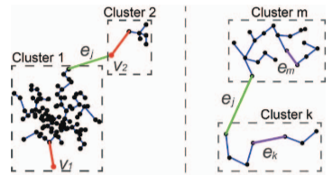

Improving the Robustness of Scagnostics


Authors. Yunhai Wang, Zeyu Wang, Tingting Liu, Michael Correll, Zhanglin Cheng, Oliver Deussen, Michael Sedlmair
Venue. TVCG (2020)
Abstract. In this paper, we examine the robustness of scagnostics through a series of theoretical and empirical studies. First, we investigate the sensitivity of scagnostics by employing perturbing operations on more than 60M synthetic and real-world scatterplots. We found that two scagnostic measures, Outlying and Clumpy, are overly sensitive to data binning. To understand how these measures align with human judgments of visual features, we conducted a study with 24 participants, which reveals that i) humans are not sensitive to small perturbations of the data that cause large changes in both measures, and ii) the perception of clumpiness heavily depends on per-cluster topologies and structures. Motivated by these results, we propose Robust Scagnostics (RScag) by combining adaptive binning with a hierarchy-based form of scagnostics. An analysis shows that RScag improves on the robustness of original scagnostics, aligns better with human judgments, and is equally fast as the traditional scagnostic measures.